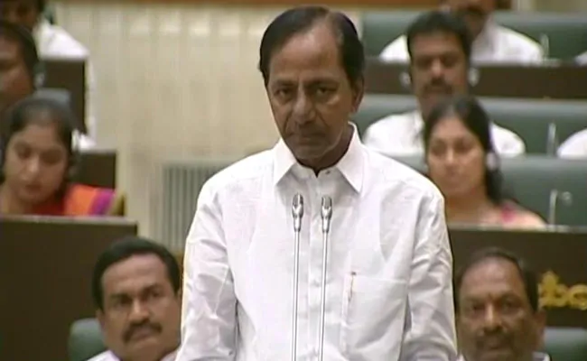

HYDERABAD: A team of the Election Commission of India (ECI) headed by senior Deputy Election Commissioner Umesh Sinha, visited Hyderabad today and conducted a meeting to assess the preparatory work for the Telangana assembly elections.
The team conducted a meeting with all the district collectors, superintendents of police (SPs) and city police commissioners and collected information regarding voters' list, Electronic Voting Machines and polling arrangements. They will submit a report to the Commission after the completion of the visit.
Earlier on Monday, Telangana Chief Electoral Officer (CEO) Rajat Kumar briefed senior officials of ECI about the preparatory work in the state to hold early assembly elections.
Telangana Chief Minister K Chandrashekar Rao last Thursday dissolved the state assembly to clear the decks for early elections in the state. The elections were earlier due for the middle of 2019.
Poll Panel Team Visits Telangana To Assess Preparedness For Early Polls

K Chandrashekar Rao dissolved the state assembly to clear the decks for early elections in Telangana